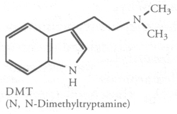

What does it mean that the most powerful of all psychedelic
hallucinogens is a part of normal human metabolism?—Terence McKenna
Chemistry
- DMT profile
Description/properties, History, Human Biochemistry/Pharmacology/Psychopharmacology, Legal Status
- DMT abstract
Chemical structure/source, Dose, Physiological effects, Psychological Effects, Duration of action
- DMT chemistry and pharmacology
Synonyms, Physical, Isolation, Synthesis, Chemistry, Pharmacology, Legal Status
- Detailed DMT data from TiHKAL
Synthesis, Dosage, Duration, Qualitative Comments
- Tryptamine Carriers FAQ
MAO Inhibitors, Synthesis of Derivatives, Psychedelic Toads, Fungi, Plants, References
There are a number of organs in the animal body which produce
measurable amounts of DMT constantly.—Dr. Rick
Strassman
Extraction
-
DMT Extraction Overview
-
DMT Frequently Asked Questions and Troubleshooting Guide
-
DMT for the Masses...a mhrb extraction tek by Noman
-
DMT from Phalaris
-
DMT Quicktek - Mimosa H. Root Bark Extraction by Vortex
PDF
-
Don Juan Cornellius ELF HARVEST
-
Elfspice's Compleat Acacia Extraction Guide
-
entheogenist's DMT recrystallization TEK
-
GreenMan's Tek
-
Heraclitus' Recrystalization Tek
-
Jorkest's D-Limonene and Fumaric Acid Approach
-
Lazy Mans Guide to Extracting Mimosa Hostilis Root Bark by Vortex
-
Lextek Extraction of DMT
-
Marsofold Tek: How to easily make DMT
-
Marsofold's Desmanthus TEK
-
Nontoxic limonene tek
-
QuantumBrujo from rootbark to smokeable spice in 7 hours
-
QT's DMT Extraction for Students
-
Raver's Patented Miracle A/B extraction
-
sammytek54543 How I pull the magick out
-
Shaggy's Jungle Tek
-
Smokable Dimethyltryptamine from Organic Sources
-
Spice Extraction-The FASA Approach
-
Vovin's Tek
Ordinary consciousness is created by a neurotransmitter called
serotonin, 5-hydroxy-tryptamine, suggestively a very close relative of
psilocybin and DMT.—Terence McKenna
Media
DMT concentrates in the human cerebrospinal fluid on a 24 hour cycle and
it reaches its peak between 3 and 4 am in most people
and that's when deep REM sleep is happening.—Terence McKenna
Related
E=±mc²=Thé
Ðëòxÿríßøñµçlëìç
HÿÞêrdïmèñsîøñ